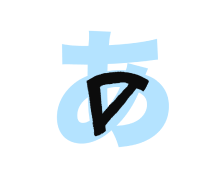

من البداية
جدول الحروف اليابانية بشكل عام و أهم الحروف بشكل خاص ، سنتعرف على مجموعة الحروف الأولى و كيف تتشابه مع اللغة العربية !
مثل ما ذكرنا سابقا حروف الكانا هو اسم يطلق على حروف الهيراغانا وحروف الكاتاكانا .و الروماجي تم ابتكارها من خلال استعارة الحروف اللاتينية و وضع قواعد مناسبة لتوضيح طريقة قراءة حروف الكانا.
لذلك هي تسمى ( روما : دولة روما ) + (جي : تعني حروف باللغة اليابانية).
لاحظ الصورة التالية لأحد اللافتات في محطة قطار في اليابان مكتوب في اللافتة طوكيو بالكانجي ثم الهيراغانا ثم بالروماجي.

لاحظ الروماجي المكتوب هو ليس عبارة عن حروف انجليزية فقط لأن فوق حرف الـ o مثلا يوجد خط، وهذه إحدى قواعد الكتابة في الروماجي لتوضيح أن الحرف ممدود.
إذا الآن لنأخذ نظرة على جزء من جدول الروماجي،. أود منكم ملاحظة النمط الذي على أساسه تم ترتيب الحروف.

( الجدول السابق عبارة عن جزء من جدول الحروف الكامل ، اذا ترغب بالإطلاع على جدول الحروف كاملا اضغط هنا)
هل لاحظت النمط ؟
انظر إلى جدول الحروف مرة أخرى و اكتشف أوجه التشابه بين العواميد و الصفوف.
لاحظ أن الحروف المركبة ( التي تتكون من حرفين ) من نفس الصف تنتهي بنفس الحرف ! و أن الحروف المركبة من نفس العامود تبدأ بنفس الحرف ! انظر إلى الصورة مرة أخرى مع الألوان التوضيحية.

الحروف اليابانية مترتبة بشكل جدا واضح وجميل للتعلم ! بإذن الله سوف يعرض جدول الحروف أكثر من مرة خلال هذه الدروس التعليمية إلى أن نتقن جميع الحروف اليابانية !( لا تقلق هذا سيكون بالمستقبل القريب جداً بإذن الله)
إذا برأيكم ؟ ما هي أهم الحروف التي يجب عليكم أن تتعلموها لإتقان نطق جميع الحروف اليابانية ؟
هذا صحيح !
المجموعة الأولى من الحروف والتي تتضمن
a , i , u , e , o .
لأنها تدخل في جميع الحروف اليابانية.
حروف المجموعة الأولى تعتبر مثل التشكيل في اللغة العربية.
من الحرف الواحد في اللغة العربية يوجد ثلاث طرق لقرائته على حسب التشكيل الموضوع عليه ، فمثلا حرف الألف..

هذه الفكرة جدا مشابهة لطريقة تركيب الحروف في اللغة اليابانية فمثلا الحرف k يوجد خمس طرق لقرائته على حسب “التشكيل” ..
و الآن بما أنك تعرف أهمية حروف المجموعة الأولى لنبدأ بتعلمها بشكل صحيح و دقيق . بالمناسبة أنت قرأت ثلاثة من هذه الحروف بشكل صحيح بمجرد قرائتك لـ حرف الألف مع التشكيل 👏.
سوف أعرض كل حرف مع صورة متحركة توضح طريقة كتابته ، يمكنك النقر على الصورة المتحركة لسماع طريقة نطق الحرف.
والآن مع الحرف الأول a ..
طريقة نطق الحرف مشابهه جدا لحرف الألف في كلمة (أَسد ) باللغة العربية .
هذا الحرف يستعمل عادة لوحده لتعبير عن الصدمة عند وقوع شي غير متوقع أو عندما تفعل شيء بالخطأ من غير قصد. لاحظ الفيديو التالي.. الطبيب يحاول إكمال عملية جراحية في طيارة تواجه مطبات هوائية ، اسمع كيف قال あ بعد جرحه للمريض بشكل خاطئ..
يمكنك أن تحفظ الحرف من خلال ربطه مع حرف الـ A ، كأن الحرف الانجليزي A مرسوم داخل حرف الهيراغانا.
الصورة من موقع Tofugu ، يمكنك الإطلاع على الحروف كاملة من خلال الموقع اضغط هنا.
الحرف الثاني i ..
النطق يشبه حرف الألف في كلمة ( إِجازة ) ، ممكن تشبهون الحرف بحرف الـ i لكن النقطة بجانبه ..لا أعلم ابتكر أي طريقة لحفظ الحرف أو فقط احفظ شكله مع التكرار.🤷️
مع دمج الحرف الاول نحصل على الكلمة あい والتي تعني “الحب” ، النطق مشابه جدا لـ آي التي نقولها عند التألم.
الحرف الثالث u ..
طريقة نطق الحرف مشابهه جدا لحرف الألف في إسم ( أُسامة ).
يمكنك حفظ الحرف عن طريق تشبيهه بحرف الـ u بعد تدويره ٩٠ درجه !
u
والآن مع الحرف الرابع e..
طريقة نطق الحرف مشابهه جدا لحرف الـ A لوحده باللغة الانجليزية .( انتبه ليس الروماجي a )
هذا الحرف يستعمل عادة لوحده لتعبير عن الاندهاش أو عند خيبة الأمل و عند حدوث شيء غير متوقع. لاحظ استخدام التعبير في الفيديوات التالية..
والآن مع الحرف الخامس o..
النطق يشبه حرف o ،( انتبه ! هذا الحرف مختلف عن u ، اتفقنا من قبل أن حرف الـ u يشبه الألف في إسم أُسامة)
ممكن حفظ شكل الحرف عن طريق تشبيه الدوائر التي بداخله كـ oo !